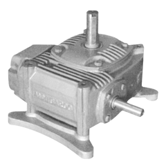
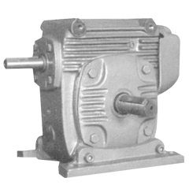

Products
We
offer a whole variety of gear boxes for power transmission systems. A
range of gears, gear boxes, geared motors are fabricated from superior
grade components. Our range of mechanized solutions includes:
Worm Reduction Gear Boxes
Types of Worm Reduction Gear Boxes:
ADITH
TRANSMISSION ‘FU’ & ‘FV’ series worm gear reducers is its well
known quality and reliability and its ability in meeting the needs of
industries worldwide. This is achieved by the most effective
combination of the very best engineering design, highest quality
material and excellence in manufacturing. adith worm gear reducers
bore testimony to our commitment for excellence and boost of such
inherent features.
- Compact
- High efficiency
- High thermal capacity
- Strength and resistance to shock
- Long life
- Unrivalled economy
- High torque capacity
- Smooth operation without trouble
Our worm gears generally conform to BS 721 / 1963 for worm gearing and accuracy to class “A” limits of those specifications.
Standard
output shafts are of carbon steel, En9 carefully selected to take the
desire torsional stresses and bending load which may be induced by over
hung drives. High tensile steel shaft or double extended shaft
for specialized application are also available on request.
Toleranc eon input & output shaft extension dia conforming to DI N
7160 & key, keyway conforming to DI N 6885.
|  |
| Worm Gears |
Vertical |
 |
 |
| Horozondal |
Over Driven |
|
|
Adaptable
|
Standard
|
Under Driven
|
Under Driven |
Over Driven
|
Vertical |
Input/Output Vertical
|
Double Reduction |
Double Reduction Worm Geared Motor
|
NU |
Input Vertical
|
Shaft Mounted |
Double Reduction
|
|
Shaft Mounted
|
|
Specification of Adaptable Worm Reduction Gear Boxes Adaptable Worm Reduction Gear Boxes up to 3-3/8"(85.7mm)CD. In Single and Double reduction models. Ratio 5:1 to 70:1 in standard steps (Single Reduction) and Upto 4900:1 in standard step (Double Reduction) Specification of Standard Worm Reduction Gear Boxes Worm Reduction Gear Boxes up to 17" CD(431.8mm)in Single and Double Reduction Models. Ratio: 5:1 to 70:1 in standard steps (Single Reduction) and Upto 4900:1 in standard step (Double Reduction) |
|
| Types |
Over Driven, Horizondal, Vertical. |
| HP |
0.5 to 50.0 HP |
|
|